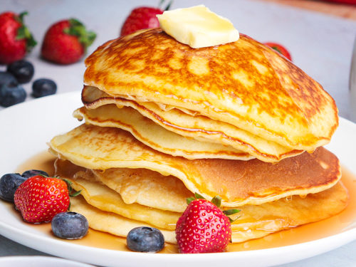
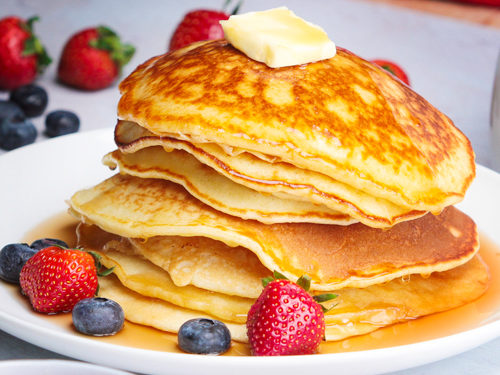

Pancakes recipe
Perfect pancakes are easier to make than you think.
This pancake recipe produces thick, fluffy, and
all-around delicious pancakes with just a few ingredients
that are probably already in your kitchen
(and it's so much better than the boxed stuff)
Ingredients
- Flour: This homemade pancake recipe starts with all-purpose flour.
- Baking powder: Baking powder, a leavener, is the secret to fluffy pancakes.
- Sugar: Just a tablespoon of white sugar is all you'll need for subtly sweet pancakes.
- Salt: A pinch of salt will enhance the overall flavor without making your pancakes taste salty.
- Milk and butter: Milk and butter add moisture and richness to the pancakes.
- Egg: A whole egg lends even more moisture. Plus, it helps bind the pancake batter together.
How to Make Pancakes From Scratch
- Sift the dry ingredients together.
- Make a well, then add the wet ingredients. Stir to combine.
- Scoop the batter onto a hot griddle or pan.
- Cook for two to three minutes, then flip.
- Continue cooking until brown on both sides.
 
